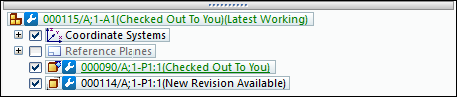
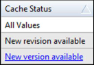

Revising managed documents in Solid Edge
Within Solid Edge, there are two methods for creating revisions of a Solid Edge document:
-
Direct document revisions
-
In-context revisions
For both direct document revisions and in-context revisions, Solid Edge searches for existing revisions. You can create a new revision or use an existing revision.
Direct document revisions
Direct document revisions create revisions of the active document. You can choose the Teamcenter tab→Document group→Revisions command for direct document revisions. Direct document revisions create revisions of Solid Edge part, sheet metal, assembly, or draft files. For example, if you used the Revisions command to revise an open draft file, Solid Edge:
-
Searches for existing revisions.
-
Enables you to create a new revision or open an existing revision.
-
Enables you to create a new revision of the draft file.
-
Provides you the opportunity to specify a folder for the new item and item revision.
-
Opens the new revised document, making it the active document.
-
Closes the original document without saving it.
You cannot create direct document revisions when you are in-place editing a managed document.
In-context revisions
With in-context revisions, you select components within an assembly and either replace the component with an existing revision or create a new revision for the component. To do this, right-click a component at the current level within an assembly and select Manage→Revisions from the shortcut menu. For example, if you used the Revisions command on a part within an assembly, Solid Edge:
-
Automatically searches for existing revisions.
-
Enables you to right-click an existing revision and select the Replace command from the shortcut menu to replace the selected component with the existing revision.
-
Enables you to create a new revision by creating a copy of the selected component and replacing it with the new revision of the document.
You cannot select components in a subassembly for revision. You have to in-place edit the subassembly to make revisions to components in the subassembly.
Revising read-only Teamcenter-managed documents
Revising a Teamcenter-managed document displays the Revisions dialog box. You can use the dialog box to create a new revision of the selected document or cancel the operation.
Creating a revision of a document opened read-only copies the file from disk to the new revision. The new revision has to be upload into Teamcenter before it becomes your active document. Any in-memory changes must be saved before checking the new revision into the database, or they may be lost.
PathFinder and Cache Assistant indicate a new revision is available
Solid Edge Assembly PathFinder provides the following indicators when a new revision is available:
-
When the document loaded is the latest version and it is not check out to you, PathFinder displays New Revision Available.
Note:When a document is checked out to you, you are editing the latest version.
-
When the document is checked out to you, and there is a new revision available, the entry in PathFinder is underlined.
-
If the loaded document is not the latest version, and it is also not the latest revision, New Version Available displays and is underlined.
Example:In this example, 000114/A indicates there is a New Revision Available, while 000090/A is Checked Out to You and there is a new revision available.

Similarly, in Cache Assistant when the document loaded in Solid Edge is an old version and a new revision exists, New Version Available displays in the Cache Status column and the text is underlined to note that there is a new revision.
